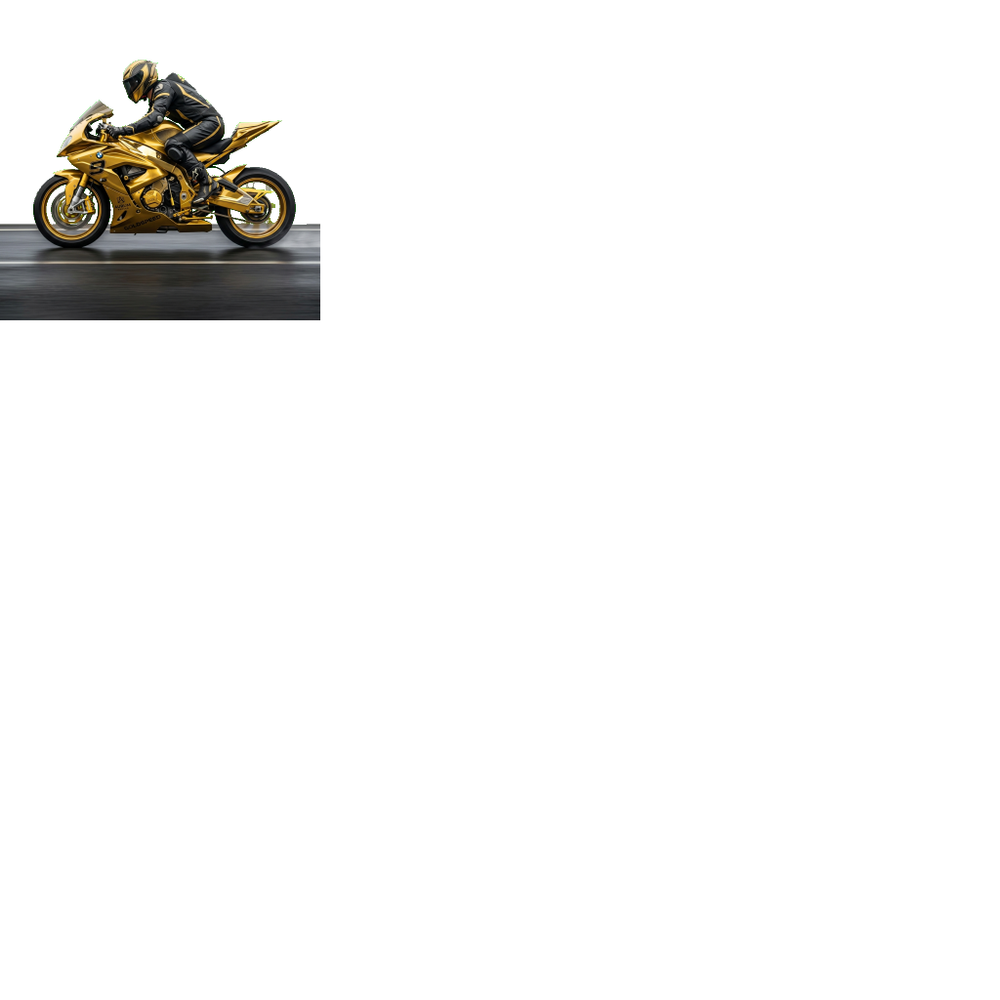
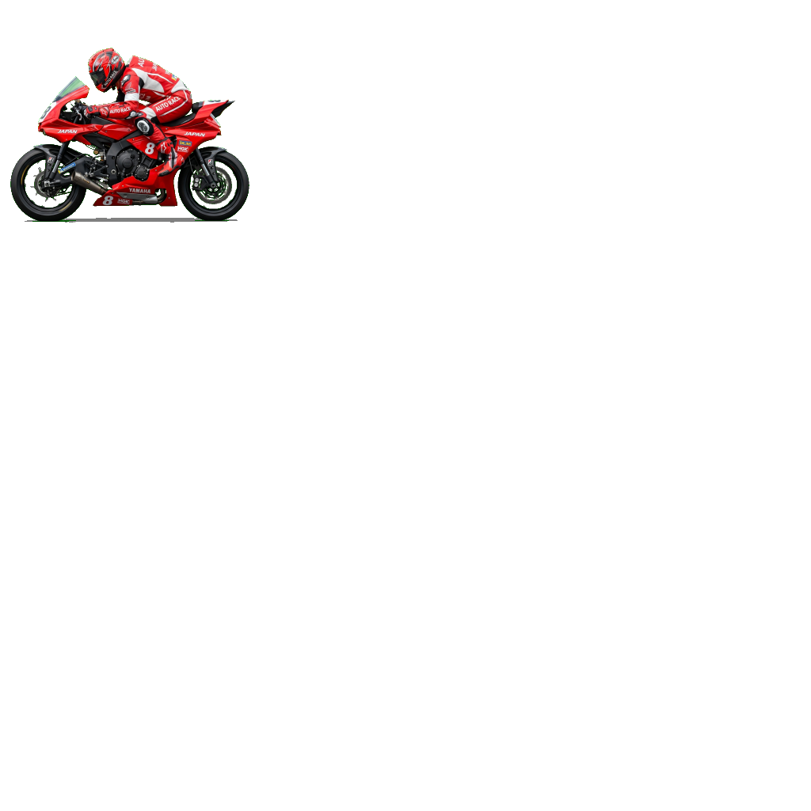
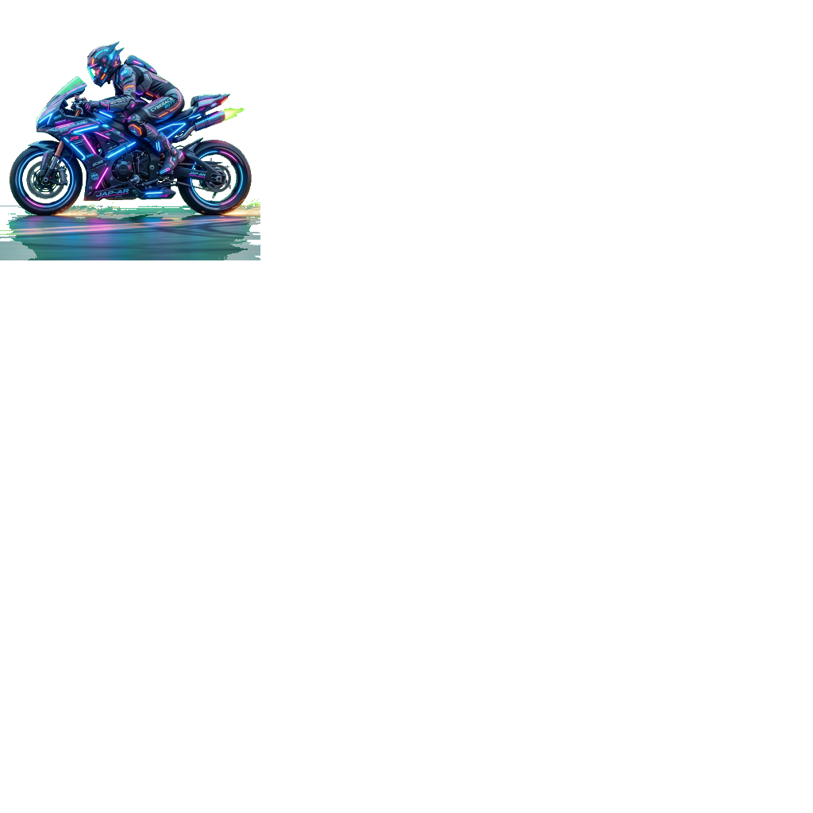

新しいバージョンがあります。
最新版にアップデートして、より快適に遊びましょう！
出走台数を選択してください
運命の券種を選択してください
【期待値】確率が一番高く堅実。まずはここから！配当は低め。
【レース】選んだ1台をとにかく応援！一番シンプルで熱くなれる！
【期待値】3着までの2台を当てる、最も的中させやすい券種の一つ。
【レース】「とにかく当てたい！」という方に最適。2台の順位は関係ありません。
【期待値】当てやすさと配当のバランスが最も良い王道ルール。
【レース】選んだ2台が順位関係なく1・2着に入ればOK！チームとして2台を応援できる！
【期待値】順番まで全て当てるため配当が高め！中穴狙いに最適。
【レース】「アイツが1着でコイツが2着だ！」というドラマチックな完全予想が決まった時の快感が最高！
【期待値】高配当を狙いつつ、3台の順位は不問なので適度なリスクヘッジにもなる。
【レース】選んだ3台がすべて3着以内に入ればOK！3台が先頭集団を固めて走っている時のテンションはMAX！
【期待値】最も当てるのが難しい分、高配当（万車券）が飛び出すロマン枠！
【レース】1〜3着を順番通りにドンピシャで当てる、究極のスリルと奇跡を味わいたいギャンブラー向け！



※当ルーレットの結果はAI予想ではなく、完全なランダム抽選です。宝くじ感覚でお楽しみいただける方のみ、自己責任で車券購入へお進みください。
時速150km、ブレーキなし。極限の緊張感と爆音が、あなたの本能を呼び覚まします。
街中でよく見かけるバイクが、一変して猛獣のようにサーキットを駆ける。最も身近な乗り物だからこそ、その凄みがダイレクトに伝わります。
ご当地B級グルメやキッズスペースも充実。ツーリングの休憩所や家族でのレジャー先としても、オートレース場は最高のスポットです。
レース前に行われる練習走行（試走）のタイムをチェック。**「数字が小さいほど速い」**のが鉄則です。迷ったら一番速い選手から狙いましょう。
強い選手は後ろ（10m〜）からスタート。最後尾から全車を抜き去る「大外一気」がオートレース最大の興奮ポイントです。